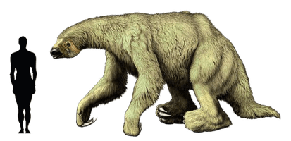
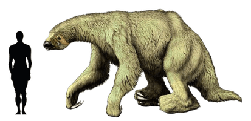

Elephants and Other Megafauna of Nebraska
Megafauna were large mammals found during the Pleistocene. The Pleistocene Epoch lasted from around
2.6 million to around 12,000 years ago and brought repeated glaciation periods with the last being
what we commonly refer to as the Ice Age. The North American Ice Age peaked from 25,000 to 18,000
years ago with a dry and cold climate. This era produced many incredible mammals.
Besides the Mammoths, Mastodons, and a saber-toothed cat that were found in Nebraska there were
other wild
creatures like the Giant Ground-Sloth the size of oxen. Nebraska hosted Woolly Rhinos and Dire
Wolves.
There was a beaver the size of a black bear and another beaver that burrowed underground like a
prairie dog.
Did you know that camels and Lamas originated from North America? Four species of camels were found
in Nebraska ranging from the Poebrotherium with the size of a beagle to the Gigantocamelus with the
height of a giraffe and large canine teeth like a T Rex.

Why Did They Get so Big?
Without dinosaurs around to hunt them, the plains of Nebraska provided the herbivores the safety, food, and room to grow. But now they faced a different threat. Carnivores were able to grow also with the lack of competition from dinosaurs and like the herbivores, they had the food and room to grow big. This produced some truly weird and amazing creatures.

 
